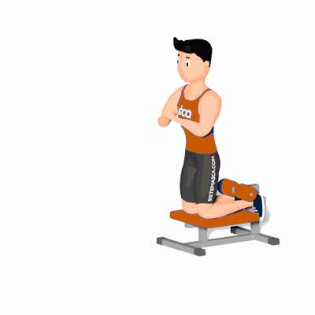

Flexão Nórdica

É um ótimo exercício para fortalecer os músculos posteriores da coxa, além de trabalhar a hipertrofia dos mesmos.
Ficha Técnica
Tipo: Musculação
Grupo Muscular: Perna
Aparelho: Nenhum
Músculos: Nenhum
Como realizar
- De costas ao aparelho, coloque os pés abaixo das almofadas e apoie os joelhos na base do aparelho;
- Ajoelhado sobre o aparelho, inicie o movimento inclinando lentamente o tronco para frente e apoie os braços quando chegar próximo ao chão;
- Em seguida, retorne a posição inicial concentrando sua força nos músculos posteriores da coxa;
- Repita os movimentos pela quantidade de vezes indicado pelo professor(a).
 RC STORE
RC STORE